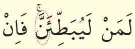
boyle yerlerde durmakta gecmekte caizdir
durulursa [..en] [fein]
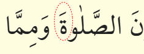
boyle yerde eger nefes yetmez ve durmak isterseniz '-h' ile durulur ve geriden alinarak devam edilir
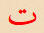
harfi ile aynidir, farkli sesller yani gecildiginde 'tu' (duruldugunda 'h') sesi veren Tâ-i Marbuta (ة) harfidir.durulursa [lah][..nessalateve..]
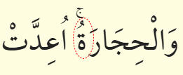
boyle yerde 2.maddeye benzer sekilde okunur. geriden almaya hacet yoktur.
harfi ile aynidir, farkli sesler yani gecildiginde 'tu' (duruldugunda 'h') sesi veren Tâ-i Marbuta (ة) harfidir.
durulursa [rah][üidde..]
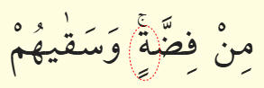
boyle yerlerde durmakta gecmekte caizdir
 harfi ile aynidir, kelimenin
sona geldiginde aldigi seklidir. Duruldugunda 'h' sesi alir.
harfi ile aynidir, kelimenin
sona geldiginde aldigi seklidir. Duruldugunda 'h' sesi alir.durulursa [..fidah] [vese..]
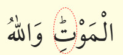
Duruldugunda 't' sesi alir.
durulursa [..mevt] [vellahü..]
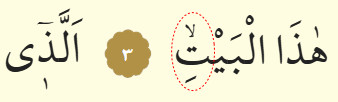
harfi ile aynidir, kelimenin
sona geldiginde aldigi seklidir. Duruldugunda 't' sesi alir.durulursa [..hezelbeyt] [ellezi..]
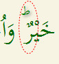
durmak daha uygundur, gecilmesi caizdir
durulursa [..hayr] [veü..]
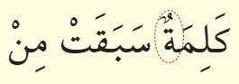
harfi ile aynidir, kelimenin
sona geldiginde aldigi seklidir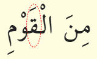
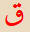
harfi ile aynidir, kelimenin ortasina geldiginde aldigi seklidir.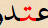
veya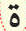
ile karistirilir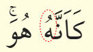
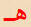
harfi ile aynidir, kelimenin sonuna geldiginde aldigi seklidir.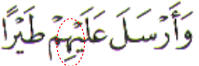
harfi ile aynidir, kelimenin ortasina geldiginde
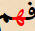
veya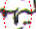
seklinde yazilabilir.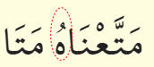
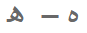
harfi ile aynidir, iki farkli sekilde yalin olarak yazilabilir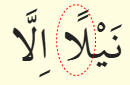
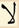
harfi ile aynidir, kelimenin sonunda bu sekilde yazilir.